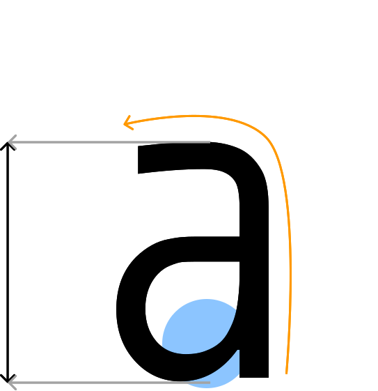

MONOID
Описание
Каждый символ в библиотеке Monoid был разработан Ларсеном так, чтобы его было очень легко отличить друг от друга. Именно поэтому он так удобен в написании кода. Шрифт также является моноширинным, поэтому с его помощью можно легко просмотреть код и обнаружить любые ошибки.
Начертания
4 ВИДА НАЧЕРТАНИЙ
| №1 | Retina |
|---|---|
| №2 | Regular |
| №3 | Bold |
| №4 | Italic |
Моноширинный |
Лаконичный |
|---|
Особенности
Языки
ПОДДЕРЖКА 67 ЯЗЫКОВ
Русский | Slovenský |
|---|---|
English | Ελληνικά |
Français | Türkçe |
O'zbek | Lietuvių |
Применение
1 | Кольцо |
|---|---|
2 | Поршень |
3 | Ключ |
Одновременно простой и интересный Monoid обычно используется для кода, однако его Italic версия напоминает шрифт, который используется в создании чертежей. Его лаконичность, точность и аккуратность не могут не радовать глаз дизайнера.